Stability-based parameter assessment
Source:vignettes/stability-based-parameter-assessment.Rmd
stability-based-parameter-assessment.RmdIn this vignette we illustrate a data-driven pipeline for the assessment of optimal clustering parameters for a single-cell RNA-seq dataset. Popular pipelines for single-cell clustering (including Seurat, SCANPY, and Monocle v3) consist of a sequence of steps, including normalization, dimensionality reduction, nearest-neighbor graph construction, and community detection on that graph. The obtained communities are then the clusters, which can be used for downstream analysis by looking at marker genes, trajectories, and more. ClustAssess offers a set of tools to assess the stability of parameters in the clustering pipeline, for the steps of dimensionality reduction, nearest-neighbor graph construction, and community detection.
To illustrate these tools, we will use a subset of cells from the Cuomo et al 2020 (Single-cell RNA-sequencing of differentiating iPS cells reveals dynamic genetic effects on gene expression) dataset. Specifically, 6 donors and 4 time points were chosen, comprising 1880 cells and 35430 expressed genes. The input is provided as a 35430 x 1880 expression level matrix containing the raw quantification (in csv format).
meta.path = 'http://bioinf.stemcells.cam.ac.uk:3838/clustassess_1gmg5bq/cuomo_metadata.csv'
counts.path = 'http://bioinf.stemcells.cam.ac.uk:3838/clustassess_1gmg5bq/all_genes_with_RP_MT.csv.gz'
cell_metadata = read.csv(meta.path, sep=',', header = TRUE, row.names = 1)
cell_metadata$donor = as.factor(cell_metadata$donor)
cell_metadata$day = as.factor(cell_metadata$day)
cuomo.counts = read_csv(counts.path)
#> Registered S3 method overwritten by 'cli':
#> method from
#> print.boxx spatstat.geom
#> Rows: 35430 Columns: 1881
#> ── Column specification ────────────────────────────────────────────────────────
#> Delimiter: ","
#> chr (1): gene_name
#> dbl (1880): X21241_6_14, X21241_6_39, X21241_6_41, X21241_6_47, X21241_6_52,...
#>
#> ℹ Use `spec()` to retrieve the full column specification for this data.
#> ℹ Specify the column types or set `show_col_types = FALSE` to quiet this message.
gene_names = cuomo.counts$gene_name
cuomo.counts = cuomo.counts[, 1:1880]
cuomo = CreateSeuratObject(cuomo.counts, row.names = gene_names)
cuomo = PercentageFeatureSet(cuomo, pattern = '^MT-', col.name = 'percent.mito')
cuomo = PercentageFeatureSet(cuomo, pattern = "^RP[SL][[:digit:]]", col.name = 'percent.rp')
one_level = as.factor(rep("cuomo", dim(cuomo)[2]))
cuomo@meta.data$level.ident = one_level
cuomo@meta.data$day.ident = cell_metadata$day
cuomo@meta.data$donor.ident = cell_metadata$donor
Idents(cuomo) = "donor.ident"
rm(cuomo.counts)
gc()
#> used (Mb) gc trigger (Mb) max used (Mb)
#> Ncells 2844453 152.0 5489435 293.2 4862686 259.7
#> Vcells 29432554 224.6 134235283 1024.2 162914351 1243.0The analysis is based on the Seurat pipeline (Hao et al 2021, Integrated analysis of multimodal single-cell data); after creating the object and recording the mitochondrial and ribosomal gene percentages, those genes are excluded from the downstream analysis.
# remove MT and RP genes
all.index = 1:nrow(cuomo)
MT.index <- grep(pattern = "^MT-", x = rownames(cuomo), value = FALSE)
RP.index = grep(pattern = "^RP[SL][[:digit:]]", x = rownames(cuomo), value = FALSE)
cuomo = cuomo[!((all.index %in% MT.index) | (all.index %in% RP.index) ), ]The data is normalized and scaled using the Seurat’s NormalizeData and ScaleData methods. The variable feature set is obtained by running the FindVariableFeatures function from the same package.
cuomo = NormalizeData(cuomo, verbose = F)
cuomo = FindVariableFeatures(cuomo, selection.method = "vst", nfeatures = 3000, verbose = F)
features = dimnames(cuomo@assays$RNA)[[1]]
var_features = cuomo@assays[["RNA"]]@var.features
n_abundant = 3000
most_abundant_genes = rownames(cuomo@assays$RNA)[order(Matrix::rowSums(cuomo@assays$RNA),
decreasing=TRUE)]
cuomo = ScaleData(cuomo, features = features, verbose = F)
cuomo = RunPCA(cuomo,
npcs = 30,
approx = F,
verbose = F,
features = intersect(most_abundant_genes, cuomo@assays$RNA@var.features))
cuomo = RunUMAP(cuomo,reduction = "pca",
dims = 1:30,
n.neighbors = 30,
min.dist = 0.3,
metric = "cosine",
verbose = F)
raw_umap = cuomo@reductions$umap@cell.embeddingsQuality checks
QC overview for the Cuomo dataset.
A time point induced separation of cells; B distributions of cells per donor, we notice a good overlap across all 6 donors, supporting the assumption of no significant batch effect. C – F distributions of sequencing depths (C), number of features (D), and percentages of reads incident to mitochondrial genes (E) and ribosomal genes (F) illustrated using the colour gradient.
No significant effects are noted.
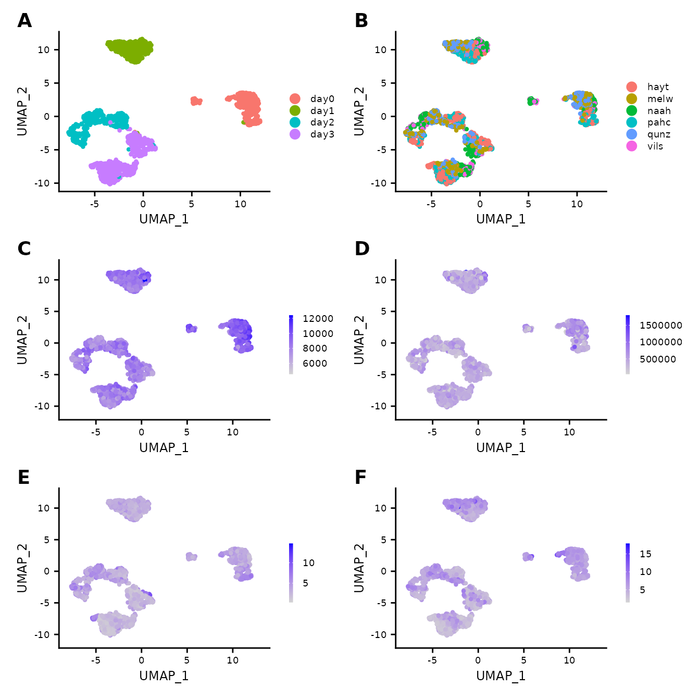
Note: The following sections provide an example of applying the ClustAssess summary assessment methods. The values of the parameters should be varied and critically assessed for each individual dataset. Also, we recommend increasing the number of repetitions used for stability inference, to ensure reliable and robust conclusions.
n_repetitions = 30The following analysis is performed by varying the seed multiple times. The n_cores user-defined parameter indicates the number of parallel threads used to run the pipeline. Setting the value of 1 will result in a sequential run of all iterations. We encourage the usage of a higher number of cores when possible, as it will decrease the runtime of the assessment pipeline. Please note that the number of cores should be chosen carefully, as each newly created process will add to the memory usage.
n_cores = 1Dimensionality reduction
The first parameter that we will evaluate and note to substantially influence the dimensionality reduction (linear or non-linear) is the feature set. The Seurat pipeline relies on the highly variable genes (default) for the computation of the Principal Components. The top x most variable genes or most abundant genes can be selected, where x varies according to the characteristics of the dataset; frequently used values are 500, 1000, 2000, 3000 etc.
To showcase the importance of this parameter, we assess three different sets of features:
-
highly variable genes: this set can be obtained in the Seurat pipeline by using either the
SCTransformorFindVariableFeaturesmethod. Depending on the method, using the default parameters will get a number of 2000 or 3000 genes. - most abundant genes: this set can be obtained by sorting the genes based on their expression level.
- intersection between highly variable and most abundant genes: this set is obtained by intersecting a subset of the most abundant genes and the whole highly variable feature set. Taking the intersection will lead to a smaller number of genes compared to the initial sets.
ma_hv_genes_intersection = intersect(most_abundant_genes[1:3000], var_features)
steps = seq(from = 500, to = 3000, by = 500)
ma_hv_steps = sapply(steps, function(x) { length(intersect(most_abundant_genes[1:x], var_features))})get_feature_stability is a function that explores the stability of a feature set. The input consists of a normalized expression matrix, that is summarized using either PCA or UMAP. The obtained embedding is then processed using the Leiden community detection method (on default values as described in the Seurat pipeline). This process is iterated across random seeds. The method outputs a list containing an UMAP embedding, the cell assignment corresponding to the most frequent partition and the Element-Centric Consistency (ECC) across all communities obtained throughout the iterations. The higher the Element-Centric Consistency, the more stable the clustering.
pca_feature_stability_object = c(get_feature_stability(data_matrix = cuomo@assays[["RNA"]]@scale.data,
feature_set = most_abundant_genes,
steps = steps,
n_repetitions = n_repetitions,
feature_type = "MA",
graph_reduction_type = "PCA",
npcs = 30,
min_dist = 0.3,
n_neighbors = 30,
metric = "cosine",
ncores = n_cores,
ecs_thresh = 1,
algorithm = 1),
get_feature_stability(data_matrix = cuomo@assays[["RNA"]]@scale.data,
feature_set = var_features,
steps = steps,
n_repetitions = n_repetitions,
feature_type = "HV",
graph_reduction_type = "PCA",
npcs = 30,
min_dist = 0.3,
n_neighbors = 30,
metric = "cosine",
ncores = n_cores,
ecs_thresh = 1,
algorithm = 1),
get_feature_stability(data_matrix = cuomo@assays[["RNA"]]@scale.data,
feature_set = ma_hv_genes_intersection,
steps = ma_hv_steps,
n_repetitions = n_repetitions,
feature_type = "MA_HV",
graph_reduction_type = "PCA",
npcs = 30,
min_dist = 0.3,
n_neighbors = 30,
metric = "cosine",
ncores = n_cores,
ecs_thresh = 1,
algorithm = 1))The function get_feature_stability outputs the stability of different feature sets and concatenates the results to ease cross-comparisons. The plot illustrates the stability assessment, across 30 runs, each with different random seeds, on the three gene sets described above. We assessed the stability of each set on incremental number of selected genes. Thus, the boxplots are arranged in groups of three (the number of evaluated feature sets); above each boxplot we specify the number of elements per subset. For the Cuomo case study, a conclusion that is supported based on this plot is that the most abundant set is more stable than the other two options, since it has higher Element-Centric Consistency scores.
plot_feature_stability_boxplot(pca_feature_stability_object, text_size = 2.5) +
theme(legend.position = c(1,0),
legend.justification = c(1,0))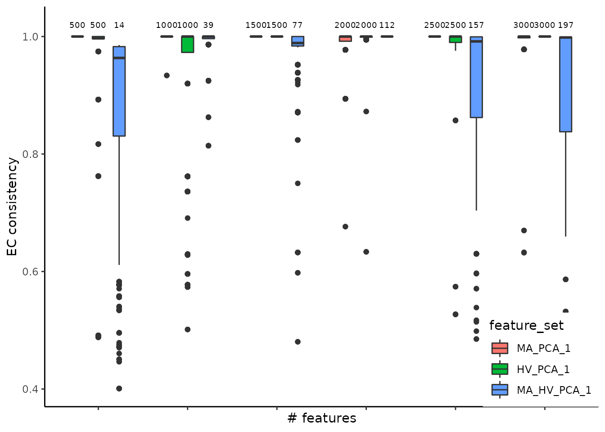
Another angle for assessing the stability is centered on the comparison between consecutive steps, for each feature set, performed using the Element-Centric Similarity on the most frequent partitions from each step. The aim is evaluating the effect of increasing the number of genes on the final partitions, and, indirectly, determining the transition from the signal to the noise zone. For the Cuomo case study, we observe an increase in similarity between consecutive steps for the most abundant and highly variable genes, suggesting that selecting more genes would lead to a more robust partitioning.
plot_feature_stability_ecs_incremental(pca_feature_stability_object, dodge_width = 1, text_size = 2) +
theme(legend.position = c(1,0),
legend.justification = c(1,0))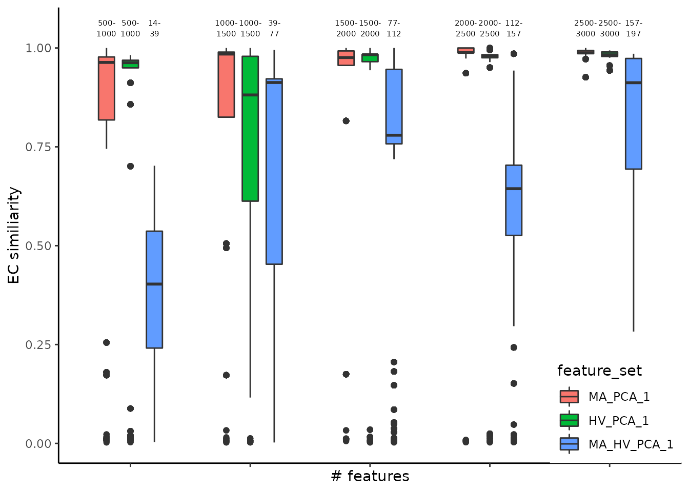
To enhance the summarized information presented as boxplots, we use plot_feature_stability_mb_facet to visualize the corresponding facet plot displaying the most frequent partitions for each feature set and step on an UMAP embedding. This plot reveals additional insights i.e. the stability of the most abundant genes might be explained in part by the scattered distribution of the cells across multiple islands. The highly variable and the intersection gene sets tend to produce more compact partitions, that may be linked to biologically relevant cell types.
plot_feature_stability_mb_facet(pca_feature_stability_object, text_size = 3)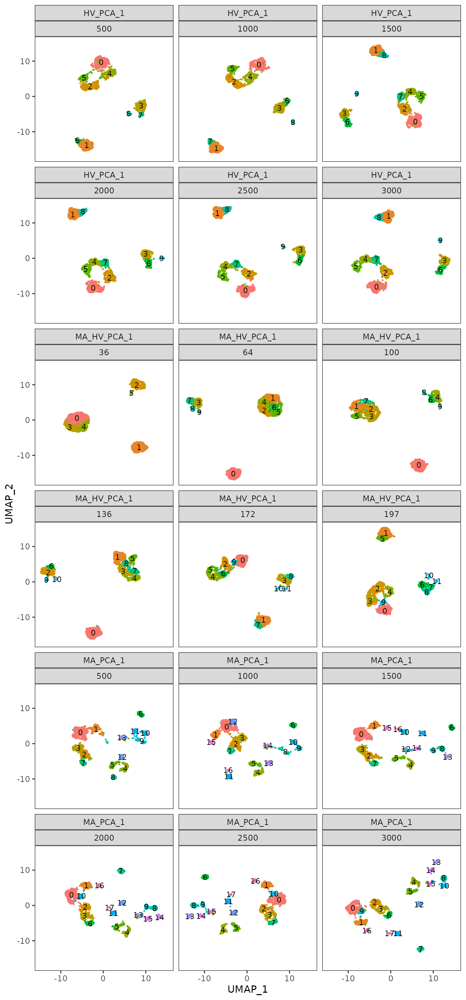
To further understand the areas of instability, we provide an additional plot where we display, on the same UMAPs as before, the Element-Centric Consistency score of the partitions obtained for each step and feature set. For the Highly Variable and the intersection sets, we note that the instability appears in groups of cells with high density. These visualizations can help us understand the relationship between stability and the topology of the data.
plot_feature_stability_ecs_facet(pca_feature_stability_object)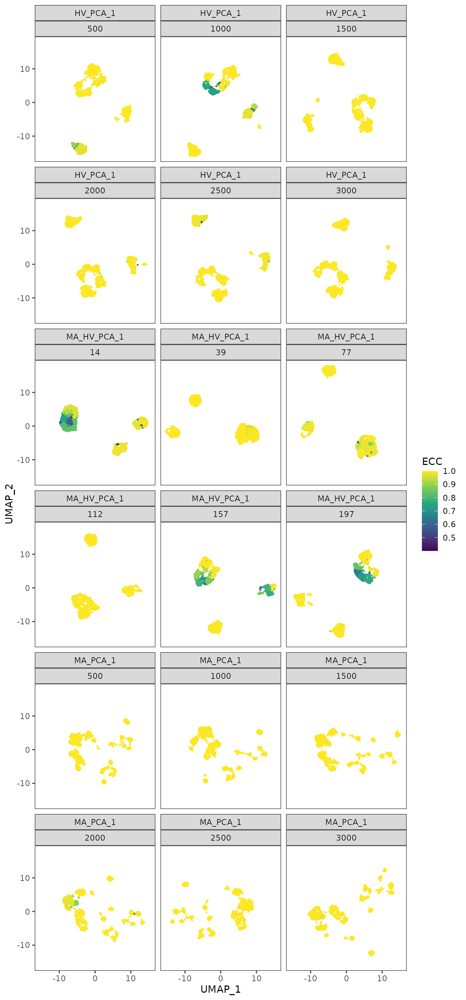
For the Cuomo case study, based on the plots presented above, we conclude that the most abundant gene set is not a suitable choice, due to the presence of multiple isolated groups of cells. Thus, we settle on using the highly variable genes set, as it produces a compact distribution of cells that is consistent across different seeds.
Graph construction
The next step in a standard single-cell analysis pipeline is building the graph using the nearest neighbour algorithm. The following parameters influence the final partitioning:
- base embedding: the graph can be built on either the PCA or the UMAP embedding (using the expression matrix isn’t recommended, as the distances would be noisier and the runtime would increase)
- the number of neighbours
- the graph type: the graph can be either unweighted (NN case) or based on a weighted Shared-Nearest Neighbours (SNN) graph. For the latter, the weights are computed using the Jaccard Similarity Index (JSI) between the neighbourhoods of two cells.
get_nn_conn_comps is a method used to link the number of neighbours and the number of connected components (a connected component is a subgraph within which there exists a path between every pair of nodes). The method accepts as input both PCA and UMAP reductions; the distribution of the number of connected components obtainable for the given number of neighbours is calculated across random seeds. The output is a list containing, for each number of neighbours, an array with the number of connected components obtained on different seeds. As before, the objects can be concatenated to facilitate comparisons between different configurations and reductions.
nn_conn_comps_object = c(get_nn_conn_comps(object = cuomo@reductions$pca@cell.embeddings,
n_neigh_sequence = c(c(1,2,3,4), seq(from = 5, to = 30, by = 5)),
n_repetitions = n_repetitions,
graph_reduction_type = "UMAP",
ncores = n_cores,
min_dist = 0.3,
n_neighbors = 30,
metric = "cosine"),
get_nn_conn_comps(object = cuomo@assays[["RNA"]]@scale.data,
n_neigh_sequence = c(c(1,2,3,4), seq(from = 5, to = 30, by = 5)),
n_repetitions = n_repetitions,
graph_reduction_type = "PCA",
ncores = n_cores,
nv = 30))The following plot describes the covariation between the number neighbours and the number of connected components obtained using both PCA and UMAP reductions as base for graph building. As the number of neighbours increases, the number of connected components decreases (this is an expected result, as increasing the number of neighbours result in a better connected graph). Please note that the number of connected components provides a lower bound on the number of clusters we can obtain by downstream community detection algorithms such as Louvain and Leiden.
Another comparison may be performed on the PCA and UMAP embeddings to assess graph connectivity. We note that, when using UMAPs, groups of cells are more separated compared to PCAs, for which a quick convergence to a connected graph (which is a graph where there exists a path between every two nodes) is obtained. The link between the number of connected components and the functional interpretation of the results is that the former could be interpreted as the minimum number of clusters that could be obtained with the given number of neighbours e.g. for the UMAP case, to obtain 5 communities from the clustering step, we would require at least 10 nearest neighbours.
plot_connected_comps_evolution(nn_conn_comps_object)
#> Warning: Transformation introduced infinite values in continuous y-axis
get_nn_importance is a method used for assessing the impact of number of nearest neighbours, of the graph type (NN or SNN) and of the base embedding (PCA or UMAP) in determining the final number of clusters. The input is either a normalized expression matrix or a PCA embedding, a range for the number of neighbours and the reduction type used for building the graph. The graph type is not provided, as the method will check both cases i.e. NN and SNN. The output comprises a list of configurations (reduction type, and the graph type). Each configuration will contain a list of unique partitions obtained from multiple runs (iterations) for each selected value of the nearest neighbours.
nn_importance_object = mapply(c,
get_nn_importance(object = cuomo@assays[["RNA"]]@scale.data,
n_neigh_sequence = seq(from = 5, to = 30, by = 5),
n_repetitions = n_repetitions,
graph_reduction_type = "PCA",
ecs_thresh = 1,
ncores = n_cores,
algorithm = 1,
nv = 30),
get_nn_importance(object = cuomo@reductions$pca@cell.embeddings,
n_neigh_sequence = seq(from = 5, to = 30, by = 5),
n_repetitions = n_repetitions,
graph_reduction_type = "UMAP",
ecs_thresh = 1,
ncores = n_cores,
algorithm = 1,
min_dist = 0.3,
n_neighbors = 30,
metric = "cosine"),
SIMPLIFY = FALSE
)We input the resulting object into plot_n_neigh_k_correspondence, to generate the following plot; it summarizes the relationship between the number of nearest neighbours and k, the number of clusters. As for the # neighbours vs # connected components correspondence plot, we note a similar descending trend of the number of clusters as the number of nearest neighbours increases. The plot also illustrates the difference between the two graph types: SNN has a tighter distribution of k (over multiple iterations) compared to NN. If the initial object contains graphs based on both UMAP and PCA embedding, this plot will showcase the impact of this choice, as well. For the Cuomo dataset, we notice that the UMAP-based graph is partitioned into a greater number of clusters compared to the PCA case.
plot_n_neigh_k_correspondence(nn_importance_object)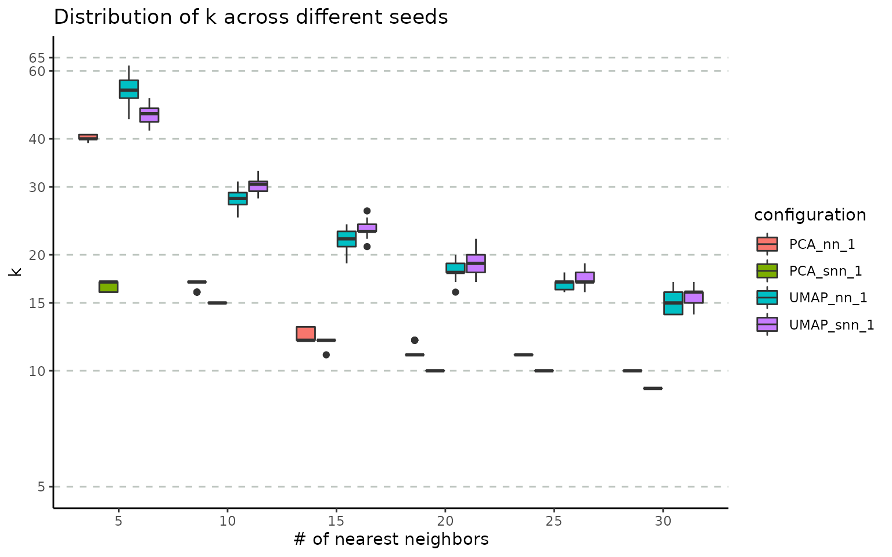
The stability of these parameters can be also evaluated using the Element-Centric Consistency applied on the partition list obtained over the multiple runs. The following summary plot underlines the evolution of the consistency as the number of neighbours increases; the PCA graphs yields stable results even for smaller number of nearest neighbours, whereas the UMAP exhibits a stability improvement as the number of neighbours increases. For the same number of nearest neighbors, SNN is more stable than NN.
plot_n_neigh_ecs(nn_importance_object)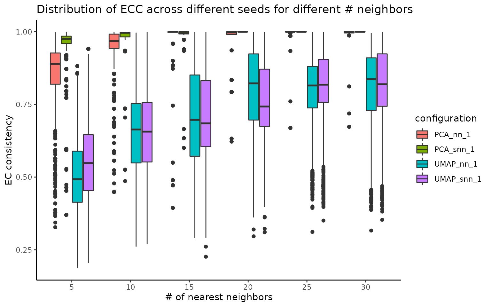
Graph clustering
The final step in a standard single-cell analysis pipeline is applying a graph-based clustering method. Choosing a community detection algorithm has a significant impact on the partitioning results. Using the get_clustering_difference we assess the stability and reproducibility of results obtained using various graph clustering methods available in the Seurat package: Louvain, Louvain refined, SLM and Leiden.
cuomo = RunPCA(cuomo,
npcs = 30,
approx = F,
verbose = F)
cuomo = RunUMAP(cuomo,reduction = "pca",
dims = 1:30,
n.neighbors = 30,
min.dist = 0.3,
metric = "cosine",
verbose = F)
adj_matrix = FindNeighbors(cuomo@reductions$umap@cell.embeddings, k.param = 25, nn.method = "rann", verbose = F)$snn
start_time_clustering_method = Sys.time()
clustering_diff_obj = get_clustering_difference(graph_adjacency_matrix = adj_matrix,
resolution = seq(from = 0.5, to = 1, by = 0.1),
n_repetitions = n_repetitions,
ecs_thresh = 1,
ncores = n_cores,
algorithm = 1:4)
#> generating partitions for Louvain method
#> generating partitions for Louvain.refined method
#> generating partitions for SLM method
#> generating partitions for Leiden methodThe stability of the methods is evaluated using the Element-Centric Consistency (ECC), which is applied on the partition list obtained over multiple runs. The following summary plot underlines the variation of the consistency as the resolution parameter increases. Above each boxplot, we display the number of clusters corresponding to the most frequent partition for the clustering method with the specific resolution parameter. Increasing the resolution leads to more clusters; in addition, we note consistently high stability for all four algorithms, although Leiden seems to perform noticeably worse for the resolution value of 0.6.
plot_clustering_difference_boxplot(clustering_diff_obj)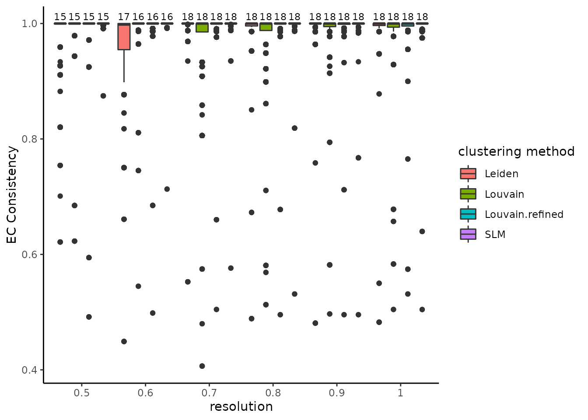
To further underline the areas of instability, we provide an additional plot where we display, on the same UMAPs as before, the ECC score of the partitions obtained for each resolution parameter with each clustering method. We note how all four algorithms are unstable in similar regions of the plot (upper island as well as different parts of the shape in the lower left). In addition, we observe that the clustering methods, except Leiden, are more stable as the resolution value increases.
plot_clustering_difference_facet(clustering_diff_obj, cuomo@reductions$umap@cell.embeddings)
As previously suggested, the resolution parameter affects the number of clusters obtained. The get_resolution_importance evaluates the effect of a range of values for the resolution parameter on the stability of the output. Besides the resolution, the user can input multiple values of the following parameters: number of neighbours, the graph type and the clustering method. The function will return a list associated with each parameter value combination. For each resolution value, the list will contain multiple sublists of partitions corresponding to specific number of clusters.
resolution_gridsearch = get_resolution_importance(embedding = cuomo@reductions$umap@cell.embeddings,
resolution = seq(from = 0.5, to = 1, by = 0.1),
n_neigh = 30,
n_repetitions = n_repetitions,
clustering_method = c(1,2),
graph_type = 2,
ecs_thresh = 1,
ncores = n_cores)The resulting object can be visualized with plot_k_resolution_corresp as shown in the code below; we showcase the relationship between the number of clusters and the resolution value. This plot also provides information on suitable resolution values for predefined number of clusters. The colour gradient is proportional to the number of occurrences of the most frequent partition. It can also be used as proxy to describe the co-variation between (k, resolution). Lighter (higher) values indicate that little variation is observed, on changes of the random seed, between the number of clusters and the resolution value.
plot_k_resolution_corresp(resolution_gridsearch) +
ggtitle("resolution - k correspondence with ecs threshold = 1")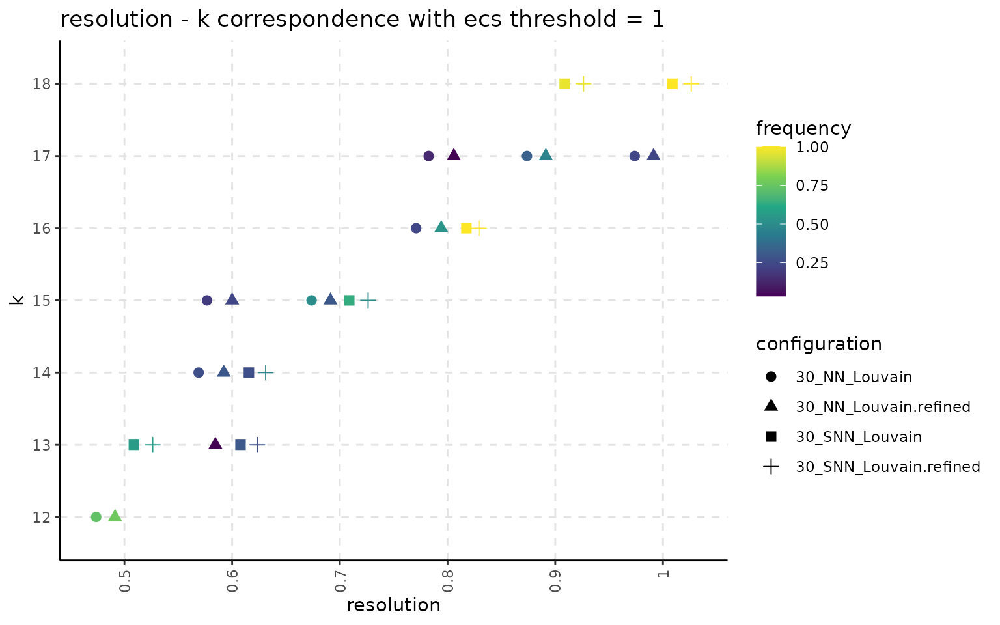
The following plot showcases the co-variation between the stability of the number of clusters and the number of different partitions resulting from changes on the seed or the resolution parameter. A high number of different partitions indicates a lower stability for a given number of clusters. The colour gradient is proportional to the frequency of the most common partition with a given number of clusters. We note that, even if we obtain a high number of different partitions, if the frequency of the most common one is close to 1, then the overall stability is high. Observing a high number of partitions, each with low frequency, indicates high instability.
plot_k_n_partitions(resolution_gridsearch) + ggtitle("k - # partitions correspondence with ecs threshold = 1")
By default, the get_resolution_importance function (as well as the previous functions part of the assessment pipeline) relies on the merging of identical partitions. Two partitions are identical if their contingency table form a square diagonal matrix. Merging is also applied to reduce the object size and to minimize the runtime for calculating the Element-Centric Consistency score. In practice, we also noticed cases with minor differences between two partitions (only 5 cells change their cluster labels). For the merging of identical partitions, these would be classed as different, although, in practice, the biological interpretation is likely to be the same. To address this we included a similarity threshold for additional flexibility i.e.: two partitions are considered identical and will be merged if the Element-Centric Similarity Score between them is above a user-defined ECS threshold.
resolution_gridsearch_thresh_99 = merge_partitions(resolution_gridsearch,
ecs_thresh = 0.99,
ncores = n_cores)Lowering the ECS threshold leads, in general, to higher number of occurences for the most frequent partition.
plot_k_resolution_corresp(resolution_gridsearch_thresh_99) +
ggtitle("resolution - k correspondence with ecs threshold = 0.99")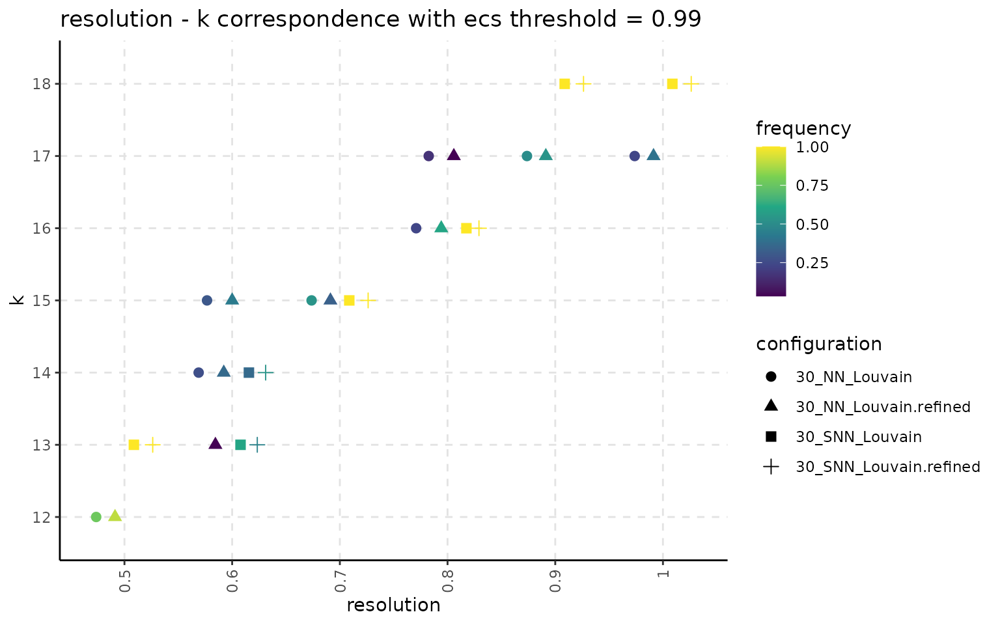
plot_k_n_partitions(resolution_gridsearch_thresh_99) +
ggtitle("k - # partitions correspondence with ecs threshold = 0.99")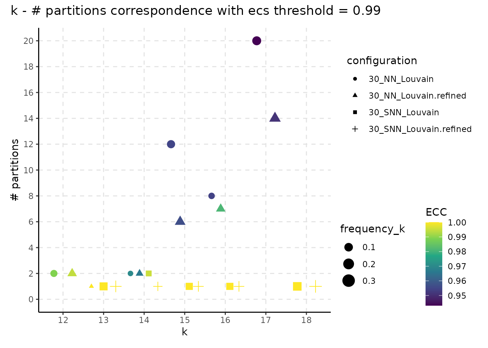
We conclude by summarizing the runtime for executing each step of the assessment pipeline. The results observed on other systems may vary; the runtime is also affected by the size of the date (i.e number of cells and features), the data itself and by actual values for the various parameters.
paste("Feature stability methods runtime:",
format(as.numeric(stop_time_feature_stability - start_time_feature_stability,
units = "mins")), "minutes")
#> [1] "Feature stability methods runtime: 20.35029 minutes"
paste("NN - # connected components methods runtime:",
format(as.numeric(stop_time_nn_conn - start_time_nn_conn,
units = "mins")), "minutes")
#> [1] "NN - # connected components methods runtime: 7.895996 minutes"
paste("NN importance methods runtime:",
format(as.numeric(stop_time_nn_importance - start_time_nn_importance,
units = "mins")), "minutes")
#> [1] "NN importance methods runtime: 36.98898 minutes"
paste("Clustering importance methods runtime:",
format(as.numeric(stop_time_clustering_method - start_time_clustering_method,
units = "mins")), "minutes")
#> [1] "Clustering importance methods runtime: 10.61586 minutes"
paste("Resolution gridsearch methods runtime:",
format(as.numeric(stop_time_resolution - start_time_resolution,
units = "mins")), "minutes")
#> [1] "Resolution gridsearch methods runtime: 2.512017 minutes"Session info
sessionInfo()
#> R version 4.1.2 (2021-11-01)
#> Platform: x86_64-pc-linux-gnu (64-bit)
#> Running under: Linux Mint 20.1
#>
#> Matrix products: default
#> BLAS: /usr/lib/x86_64-linux-gnu/blas/libblas.so.3.9.0
#> LAPACK: /usr/lib/x86_64-linux-gnu/lapack/liblapack.so.3.9.0
#>
#> locale:
#> [1] LC_CTYPE=en_US.UTF-8 LC_NUMERIC=C
#> [3] LC_TIME=en_US.UTF-8 LC_COLLATE=en_US.UTF-8
#> [5] LC_MONETARY=ro_RO.UTF-8 LC_MESSAGES=en_US.UTF-8
#> [7] LC_PAPER=ro_RO.UTF-8 LC_NAME=C
#> [9] LC_ADDRESS=C LC_TELEPHONE=C
#> [11] LC_MEASUREMENT=ro_RO.UTF-8 LC_IDENTIFICATION=C
#>
#> attached base packages:
#> [1] stats graphics grDevices utils datasets methods base
#>
#> other attached packages:
#> [1] patchwork_1.1.1 ClustAssess_0.3.0 ggplot2_3.3.5 Matrix_1.4-0
#> [5] readr_2.1.0 SeuratObject_4.0.4 Seurat_4.0.5
#>
#> loaded via a namespace (and not attached):
#> [1] systemfonts_1.0.3 plyr_1.8.6 igraph_1.2.10
#> [4] lazyeval_0.2.2 splines_4.1.2 listenv_0.8.0
#> [7] scattermore_0.7 digest_0.6.29 foreach_1.5.1
#> [10] htmltools_0.5.2 fansi_0.5.0 magrittr_2.0.1
#> [13] memoise_2.0.1 tensor_1.5 cluster_2.1.2
#> [16] ROCR_1.0-11 tzdb_0.2.0 globals_0.14.0
#> [19] matrixStats_0.61.0 vroom_1.5.6 pkgdown_2.0.1
#> [22] spatstat.sparse_2.0-0 prettyunits_1.1.1 colorspace_2.0-2
#> [25] rappdirs_0.3.3 ggrepel_0.9.1 textshaping_0.3.6
#> [28] xfun_0.28 dplyr_1.0.7 crayon_1.4.2
#> [31] jsonlite_1.7.2 spatstat.data_2.1-0 survival_3.2-13
#> [34] zoo_1.8-9 iterators_1.0.13 glue_1.6.0
#> [37] polyclip_1.10-0 gtable_0.3.0 leiden_0.3.9
#> [40] future.apply_1.8.1 abind_1.4-5 scales_1.1.1
#> [43] DBI_1.1.1 miniUI_0.1.1.1 Rcpp_1.0.7
#> [46] progress_1.2.2 viridisLite_0.4.0 xtable_1.8-4
#> [49] reticulate_1.22 spatstat.core_2.3-2 bit_4.0.4
#> [52] htmlwidgets_1.5.4 httr_1.4.2 RColorBrewer_1.1-2
#> [55] ellipsis_0.3.2 ica_1.0-2 pkgconfig_2.0.3
#> [58] farver_2.1.0 sass_0.4.0 uwot_0.1.11
#> [61] deldir_1.0-6 here_1.0.1 utf8_1.2.2
#> [64] tidyselect_1.1.1 labeling_0.4.2 rlang_0.4.12
#> [67] reshape2_1.4.4 later_1.3.0 munsell_0.5.0
#> [70] tools_4.1.2 cachem_1.0.6 cli_3.1.0
#> [73] generics_0.1.1 ggridges_0.5.3 evaluate_0.14
#> [76] stringr_1.4.0 fastmap_1.1.0 yaml_2.2.1
#> [79] ragg_1.2.1 goftest_1.2-3 knitr_1.36
#> [82] bit64_4.0.5 fs_1.5.0 fitdistrplus_1.1-6
#> [85] purrr_0.3.4 RANN_2.6.1 pbapply_1.5-0
#> [88] future_1.23.0 nlme_3.1-153 mime_0.12
#> [91] compiler_4.1.2 rstudioapi_0.13 plotly_4.10.0
#> [94] curl_4.3.2 png_0.1-7 spatstat.utils_2.2-0
#> [97] tibble_3.1.6 bslib_0.3.1 stringi_1.7.6
#> [100] highr_0.9 desc_1.4.0 RSpectra_0.16-0
#> [103] lattice_0.20-45 vctrs_0.3.8 pillar_1.6.4
#> [106] lifecycle_1.0.1 spatstat.geom_2.3-0 lmtest_0.9-39
#> [109] jquerylib_0.1.4 RcppAnnoy_0.0.19 data.table_1.14.2
#> [112] cowplot_1.1.1 irlba_2.3.5 httpuv_1.6.3
#> [115] R6_2.5.1 promises_1.2.0.1 KernSmooth_2.23-20
#> [118] gridExtra_2.3 parallelly_1.29.0 codetools_0.2-18
#> [121] MASS_7.3-54 assertthat_0.2.1 rprojroot_2.0.2
#> [124] withr_2.4.3 sctransform_0.3.2 mgcv_1.8-38
#> [127] parallel_4.1.2 hms_1.1.1 grid_4.1.2
#> [130] rpart_4.1-15 tidyr_1.1.4 rmarkdown_2.11
#> [133] Rtsne_0.15 shiny_1.7.1